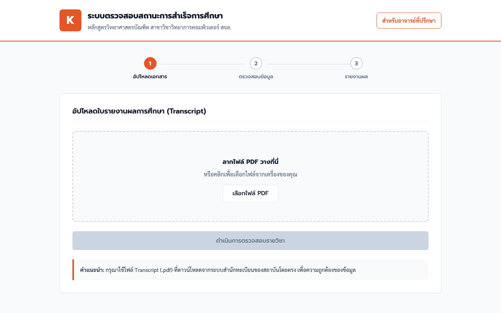

About Me
Kobkarn Theerarangsikul
Hi, I'm Kobkarn Theerarangsikul, but you can call me Guy. I'm a student at KMITL, currently majoring in Computer Science.
In my free time, I like to play video games, read books, and watch movies. Here are some of my favorite video games:
- The Witcher 3
- Assassin's Creed IV: Black Flag
- Wasteland 3
- Cyberpunk 2077
Showcase
Skills
 Python
Python Java
Java  Docker
Docker HTML
HTML CSS
CSS Git
Git
Projects
Currently working on this project with my friends

SmartGrad
A web app that helps KMITL students track their study progress. You upload your transcript PDF, and it checks how much of the curriculum you have completed and suggests a study plan for next semester. It also has a page for advisors to follow their students.